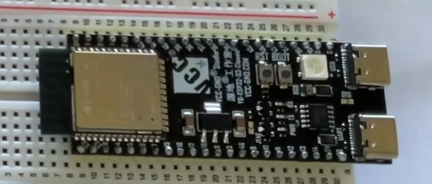
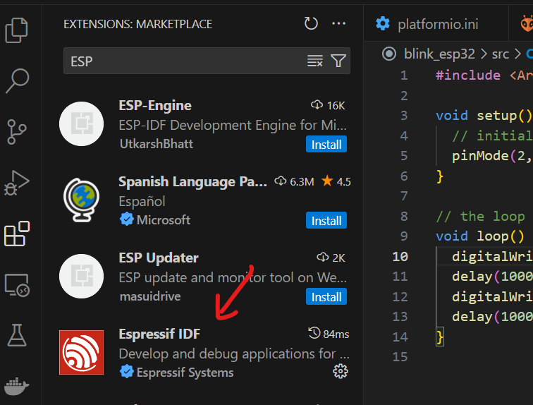
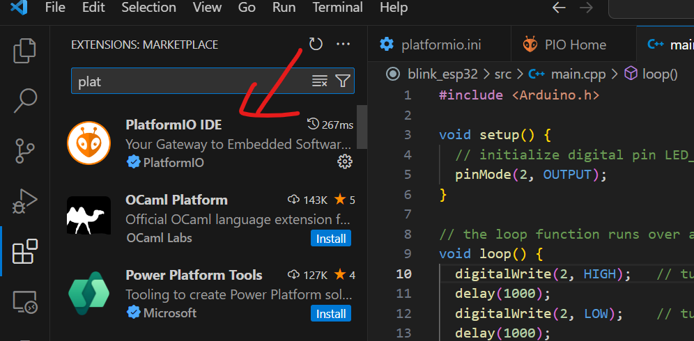
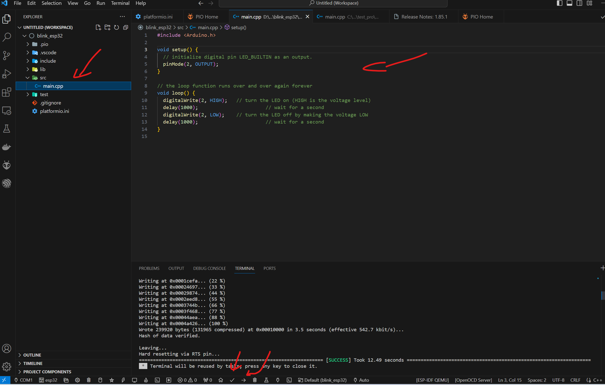

ESP32-S3-DevKitC开发板图片

学习方法
首先从开发板入门、然后结合项目、官方案例学习提高。
注意
- 使用ESP32-S3自带的串口连接电脑时，要确保已经关闭VMWare之类的虚拟机，否则会反复报警告声，即连接上又断开反复。
参考文档
老宇哥带你玩转ESP32，12篇基础教程已经更新完毕，接下来是进阶教程
《ESP32 学习笔记》 之Arduino环境下 使用 FreeRTOS 操作系统
ESP32 S3 的VS Code + PlatformIO 开发环境搭建
安装ESP32驱动
通过安装Arduino开发软件的方式，附带安装ESP32的驱动
参考：
1.vscode下ESP32开发环境配置（100%成功）
2.ESP-IDF Windows Installer Download
安装完之后，重新插拔一下USB，然后打开串口助手软件检查一下。
安装Visual Studio Code以及PlatformIO ESP32IDF插件


测试代码

#include <Arduino.h>
void setup() {
// initialize digital pin LED_BUILTIN as an output.
pinMode(2, OUTPUT);
}
// the loop function runs over and over again forever
void loop() {
digitalWrite(2, HIGH); // turn the LED on (HIGH is the voltage level)
delay(1000); // wait for a second
digitalWrite(2, LOW); // turn the LED off by making the voltage LOW
delay(1000); // wait for a second
}